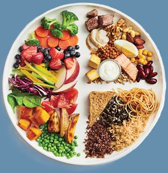

Miért fontos a megfelelő étrend betartása és milyen étrended érdemes edzés mellet tartani?
Az étrend az energiaszabályozás alapja
Az étrendünk meghatározza a szervezetünkbe bevitt kalóriák mennyiségét és minőségét, ami elengedhetetlen a testösszetétel szabályozásához. A fogyás vagy az izomtömeg megtartása szempontjából a kalóriamérleg kulcsfontosságú, hiszen ha több kalóriát fogyasztunk, mint amennyit elégetünk, súlygyarapodást tapasztalhatunk, míg az energiahiány fogyást eredményezhet. Bár az edzéssel kalóriákat égethetünk el, ez önmagában nem képes ellensúlyozni a rossz étrendet. Egy-egy edzés során 300–500 kalóriát égethetünk el, de ezt akár egy kis adag édességgel is könnyedén visszapótolhatjuk, ami akadályozza a céljaink elérését. A megfelelő étrend tehát azért lényeges, mert az energiaszabályozás alapját biztosítja, míg az edzés inkább csak kiegészítő eszköz ebben a folyamatban.
Az izmok és a szövetek tápanyagigénye
Az edzés serkenti az izomrostokat és támogatja az izomnövekedést, de ehhez elengedhetetlen, hogy a szervezet megkapja a megfelelő tápanyagokat. Az izmok felépüléséhez és regenerálódásához elsősorban fehérjére van szükség, míg a szénhidrátok az energiaszintet biztosítják. A megfelelő zsírok és vitaminok pedig a hormonok szabályozásában játszanak fontos szerepet. Egy kiegyensúlyozott étrend nélkül a szervezet nem lesz képes az edzés által létrehozott mikrosérülésekből regenerálódni, és az izomnövekedés sem fog optimálisan megvalósulni. Tehát az étkezés az izomépítés és a regeneráció alapja, míg az edzés az izomépítés serkentéséért felelős.
Az étrend befolyásolja a hormonháztartást
Az étrend nemcsak az energiabevitelt és a tápanyagok biztosítását segíti, hanem a hormonális egyensúly fenntartásához is hozzájárul. Az olyan feldolgozott élelmiszerek, mint a cukorban és finomított szénhidrátokban gazdag ételek, könnyen felboríthatják az inzulin- és más hormonális szintet, ami hízáshoz és egyéb egészségügyi problémákhoz vezethet. A kiegyensúlyozott étrend, amely fehérjében, rostban és egészséges zsírokban gazdag, segít megőrizni a hormonháztartást. A megfelelő hormonális egyensúly pedig elengedhetetlen a zsírégetés, az izomépítés és a jó közérzet szempontjából.
Éhségérzet és túlzott kalóriabevitel szabályozása
Az étrend közvetlenül befolyásolja az éhségérzetünket és a telítettségérzést. Az alacsony fehérje- vagy rosttartalmú étrend nem biztosítja a megfelelő telítettséget, így gyakrabban érezhetünk éhséget és vágyat a magas kalóriatartalmú ételek iránt. Ez könnyen túlevéshez vezethet, ami hosszú távon megnehezíti a súlyvesztést vagy a testsúly fenntartását. Az edzés ugyan növeli az energiafelhasználást, de nem képes szabályozni az éhségérzetet úgy, mint az étrend. Ha étrendünk gazdag tápanyagokban és megfelelő mennyiségű fehérjét, rostot tartalmaz, az hozzájárul a telítettségérzet kialakításához, és ezáltal csökkenti a túlevés esélyét.
Hosszú távú eredmények és fenntarthatóság
Az étrendi változtatások általában hosszabb távon fenntarthatóbb eredményeket hoznak, mint az edzésre épített változtatások. Egy kiegyensúlyozott, tápanyagokban gazdag étrend segít stabilizálni a testsúlyt és támogatja az egészséges testösszetétel fenntartását. Ha valaki kizárólag az edzésre építi az életmódbeli változtatásait, de nem figyel az étrendre, az eredmények idővel stagnálhatnak, és könnyen visszaesés következhet be. Az étrend és az edzés együttes alkalmazása hozza a legjobb eredményeket, de az étrend jelenti az alapot, amire építeni lehet.
Ha lejjebb görgetnek találnak egy minta étrendet ami tökéletesen megmutatja mi alapján kéne bevinni a megfelelő kalóriákat.
Ezen felül van egy kalkulátor ami kiszámolja pontosan mennyi kalóriát is kéne pontosan bevinni.
Mintaétrend
| Étkezés | Reggeli | Ebéd | Vacsora | Snack |
|---|---|---|---|---|
| Ételek | Zabkása bogyós gyümölcsökkel, mandula | Grillezett csirke, barna rizs, brokkoli | Lazac, quinoa, párolt spenót | Proteinturmix banánnal |
| Makrók | Reggeli: 800kcal/30g Protein | Ebéd: 1200kcal/50g Protein | Vacsora: 1000kcal/40g Protein | Snack: 400kcal/30g Protein |
| Hízás | 3 szeletelt szalonna, 2 tojás, 2 szelet fehér pirítós | Hátszín, Édesburgonya, Választott zöldségek | 3 palacsinta, RengetegProtein Spreads krém | 200 g csirke, Marék lila káposzta, Maroknyi saláta, 1 lilahagyma, 75 g fehér rizs, 1 tortilla lap, Reszelt sajt |
| Makrók (Hízás) | 447 kcal/38g Protein | 760 kcal/64g Protein | 468 kcal/18g Protein | 835 kcal/72g Protein |
| Szálkásítas | 4 db tojásfehérje, 1 db egész tojás, 100 g paprika, 100 g paprika, 40 g zabpehely | 150 g csirkemell, 100 g főtt barna rizs, 100 g párolt brokkoli, 50 g párolt répa | 150 g sovány túró, 50 g bogyós gyümölcs (áfonya, málna), 15 g dió | 120 g lazac, 150 g vegyes saláta (fejes saláta, uborka, paradicsom), 1 evőkanál olívaolaj |
| Makrók (Szálkásítas) | 320 kcal/25g Protein | 400 kcal/35g Protein | 250 kcal/20g Protein | 400 kcal/25g Protein |
| Étrend kiegészítők | Protein por | Vitaminok | Kreatin | Muscle-Mass |
Kalória Kalkulátor
Írd be a testsúlyodat, hogy megtudd az ideális napi kalóriabevitelt: